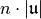
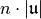
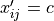
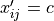

Algorithms¶
Integrate Method¶
Main driver for qmcpy
-
integrate.integrate(integrand, measure, distribution, stopping_criterion)¶ Specify and compute integral of
 for
for  .
.- Parameters
integrand (Integrand) – an object from class Integrand
measure (Measure) – an object from class Measure
distribution (DiscreteDistribution) – an object from class DiscreteDistribution
stopping_criterion (StoppingCriterion) – an object from class StoppingCriterion
- Returns
tuple containing:
solution (float): estimated value of the integral
data (AccumData): other information such as number of sampling points used to obtain the estimate
- Return type
Integrand Class¶
-
class
algorithms.integrand.__init__.Integrand(nominal_value=None)¶ -
__init__(nominal_value=None)¶ Specify and generate values
for .Any sublcass of Integrand must include the method, g(self, x, coordIndex)
- Parameters
nominal_value –
 such that
such that 
-
abstract
g(x, coord_index)¶ Original integrand to be integrated
- Parameters
x – nodes,
 row of an  matrix
row of an  matrixcoord_index – set of those coordinates in sequence needed,

- Returns
 matrix with values
matrix with values  where if
where if  , then
, then  for
for  , and  otherwise
, and  otherwise
-
transform_variable(measure, distribution)¶ This method performs the necessary variable transformation to put the original integrand in the form required by the DiscreteDistributon object starting from the original Measure object
- Parameters
measure (Measure) – the Measure object that defines the integral
distribution (DiscreteDistribution) – the discrete distribution object that is sampled from
Returns: transformed integrand
-
-
class
algorithms.integrand.asian_call.AsianCall(BMmeasure=None, volatility=0.5, start_price=30, strike_price=25, nominal_value=None)¶ Specify and generate payoff values of an Asian Call option
-
g(x, ignore)¶ Original integrand to be integrated
- Parameters
x – nodes,
row of an matrixcoord_index – set of those coordinates in sequence needed,
- Returns
- matrix with values
where if , then
for , and otherwise
-
-
class
algorithms.integrand.keister.Keister(nominal_value=None)¶ Specify and generate values
 for
for 
The standard example integrates the Keister integrand with respect to an IID Gaussian distribution with variance 1/2
Keister, Multidimensional Quadrature Algorithms, Computers in Physics, 10, pp.119-122, 1996.
-
g(x, coord_index)¶ Original integrand to be integrated
- Parameters
x – nodes,
row of an matrixcoord_index – set of those coordinates in sequence needed,
- Returns
- matrix with values
where if , then
for , and otherwise
Measure Class¶
-
class
algorithms.measures.__init__.Measure(dimension=None, **kwargs)¶ Specifies the components of a general measure used to define an integration problem or a sampling method
-
class
algorithms.measures.measures.BrownianMotion(timeVector=None)¶
-
class
algorithms.measures.measures.IIDZeroMeanGaussian(dimension=None, variance=None)¶
-
class
algorithms.measures.measures.Lattice(dimension=None)¶
-
class
algorithms.measures.measures.Sobol(dimension=None)¶
-
class
algorithms.measures.measures.StdGaussian(dimension=None)¶
-
class
algorithms.measures.measures.StdUniform(dimension=None)¶
Distribution Class¶
-
class
algorithms.distribution.__init__.DiscreteDistribution(accepted_measures, true_distribution=None, distrib_data=None)¶ Specifies and generates the components of

-
distribution_list¶ list of DiscreteDistribution instances
-
true_distribution¶ true distribution
- Type
-
 used to determine
used to determine 
-
class
algorithms.distribution.iid_distribution.IIDDistribution(true_distribution=None, distrib_data=None, rngSeed=None)¶ Specifies and generates the components of
 where the
where the  are IIDDistribution uniform on
are IIDDistribution uniform on ![[0,1]^d](_images/math/38fbdb5f0cd005023c1bb115f01c323f34f20446.png) or IIDDistribution standard Gaussian
or IIDDistribution standard Gaussian
-
class
algorithms.distribution.quasi_random.QuasiRandom(true_distribution=None, distrib_data=None, rngSeed=None)¶
Sobol sequence generator
-
class
algorithms.distribution.digital_seq.DigitalSeq(Cs, kstart=0, m=None, s=None, returnDeepCopy=True)¶ Digital sequence point generator based on generating matrices.
This sequence generator can take classical (m by m) generating matrices or higher-order (alpha m by m) generating matrices from interlaced digital nets, interlaced polynomial lattice rules or higher-order polynomial lattice rules. This code is specific for base 2 digital nets.
-
__init__(Cs, kstart=0, m=None, s=None, returnDeepCopy=True)¶ Construct a digital sequence point generator given a list of generating matrices.
Each generating matrix in the list is represented by a list of integer representation of its columns with the least significant bit at the top row. E.g., the upper triangular matrix with all ones is represented as [ 1, 3, 7, 15, … ] The number of columns (i.e., the length of the list above representation for a generator matrix) determines m and then the number of points one can generate is 2**m. Only the length of the first generating matrix Cs[0] is checked, the others need to be at least this length.
The number of bits needed to represent all columns of all generating matrices is the precision “t” with which the points will be constructed.
For a classical net t = m as we have square m by m generating matrices. For higher order (e.g., through interlacing) nets t = alpha m where alpha is the rate of convergence aimed for in approximating integrals (in the function space setting used to construct or analyse the generating matrices).
- Parameters
Cs – generating matrices as a list of lists, see description above; or, if Cs is a string it will be interpreted as a filename and the generating matrices will be load from this file
kstart – the index of the point from which you want this instance to start, the first point is 0
Example
Example usage with a simply unit matrix and the powers of the polynomial (X+1) over Z_2[X]. The first dimension is then the van der Corput sequence. The second matrix is the choice of the second dimension of the sobol’ and Niederreiter sequences.
>>> from __future__ import print_function >>> m = 5 >>> C1 = [ 2**i for i in range(m) ] # van der Corput sequence = identity matrix >>> C2 = [ 1 for i in range(m) ] # here we build the 2nd matrix of the sobol' and Niederreiter seq >>> for i in range(1, m): C2[i] = (C2[i-1] << 1) ^ C2[i-1] >>> Cs = [ C1, C2 ] >>> seq = digitalseq_b2g(Cs) >>> from copy import deepcopy >>> [ deepcopy(seq.cur) for x in seq ]
[[0, 0], [16, 16], [24, 8], [8, 24], [12, 12], [28, 28], [20, 4], [4, 20], [6, 10], [22, 26], [30, 2], [14, 18], [10, 6], [26, 22], [18, 14], [2, 30], [3, 15], [19, 31], [27, 7], [11, 23], [15, 3], [31, 19], [23, 11], [7, 27], [5, 5], [21, 21], [29, 13], [13, 29], [9, 9], [25, 25], [17, 1], [1, 17]]
>>> for x in seq: >>> for xj in x: print(xj, end=" ") >>> print()
0 0 0.5 0.5 0.75 0.25 0.25 0.75 0.375 0.375 0.875 0.875 0.625 0.125 0.125 0.625 0.1875 0.3125 0.6875 0.8125 0.9375 0.0625 0.4375 0.5625 0.3125 0.1875 0.8125 0.6875 0.5625 0.4375 0.0625 0.9375 0.09375 0.46875 0.59375 0.96875 0.84375 0.21875 0.34375 0.71875 0.46875 0.09375 0.96875 0.59375 0.71875 0.34375 0.21875 0.84375 0.15625 0.15625 0.65625 0.65625 0.90625 0.40625 0.40625 0.90625 0.28125 0.28125 0.78125 0.78125 0.53125 0.03125 0.03125 0.53125
These are the first 32 sobol’ or Niederreiter points in 2D.
Warning: please mind the deepcopy if you store the member variables in a list, you get returned a reference to the value. If you don’t use deepcopy all your list items will refer to the last value (and thus all be the same).
Using numpy you can load a Bs.col (or Cs.col) file from the qmc4pde construction scripts by using:
numpy.loadtxt('Bs64.col', int) # mind the int: read as integers!
f = open('Bs.col') Bs = [map(int, line.split()) for line in f] # arbitrary big integers here...
The easiest way is however to just provide the filename as the Cs argument (which will use method 2 above).
Standard the points are generated as double precision numbers, however if one replaces seq.recipd by a multi precision variable with value 2**-seq.t then the points will be delivered as such a type. Alternatively, the unscaled values are available as seq.cur and the points can then be generated as rationals with denominator 2**seq.t.
Note: The generating matrices Cs which are passed in are available as the Csr field of this object, but note that they have been bit reversed.
-
Data Class¶
Definition for abstract class, AccumData
-
class
algorithms.accum_data.__init__.AccumData¶ - Accumulated data required in the computation of the integral,
stores the sample mean and variance of integrand values
-
n_samples_total¶ number of samples used so far.
- Type
array-like
-
confid_int¶ error bound on the solution.
- Type
array-like (2, 1)
-
__init__()¶ Initialize data instance
-
abstract
update_data(distribution, integrand)¶ Update the accumulated data
- Parameters
distribution (DiscreteDistribution) – an instance of DiscreteDistribution
integrand (Integrand) – an instance of Integrand
- Returns
None
Definition for class MeanVarData, a subclass of AccumData
-
class
algorithms.accum_data.mean_var_data.MeanVarData(n_integrands)¶ Accumulated data for IIDDistribution calculations, stores the sample mean and variance of integrand values
-
__init__(n_integrands)¶ Initialize data instance
- Parameters
n_integrands (int) – number of integrands
-
update_data(distribution: algorithms.distribution.DiscreteDistribution, integrand: algorithms.integrand.Integrand)¶ Update data
- Parameters
distribution (DiscreteDistribution) – an instance of DiscreteDistribution
integrand (Integrand) – an instance of Integrand
- Returns
None
-
Definition for MeanVarDataRep, subclass of AccumData
-
class
algorithms.accum_data.mean_var_data_rep.MeanVarDataRep(n_integrands, n_streams)¶ Accumulated data for lattice calculations
-
__init__(n_integrands, n_streams)¶ Initialize data instance
-
update_data(distribution: algorithms.distribution.DiscreteDistribution, integrand: algorithms.integrand.Integrand)¶ Update data
- Parameters
distribution (DiscreteDistribution) – an instance of DiscreteDistribution
integrand (Integrand) – an instance of Integrand
- Returns
None
-
StoppingCriterion Class¶
Abstract class for defining stopping conditions for qmcpy algorithms
-
class
algorithms.stop.__init__.StoppingCriterion(distribution, allowed_distribs, abs_tol, rel_tol, n_init, n_max)¶ Decide when to stop
-
__init__(distribution, allowed_distribs, abs_tol, rel_tol, n_init, n_max)¶ - Parameters
distribution (DiscreteDistribution) – an instance of DiscreteDistribution
allowed_distribs – distribution’s compatible with the StoppingCriterion
abs_tol (float) – absolute error tolerance
rel_tol (float) – relative error tolerance
n_init (int) – initial number of samples
n_max (int) – maximum number of samples
-
abstract
stop_yet()¶ Determine when to stop
-
Stopping criterion based on var(stream_1_estimate, …, stream_16_estimate) < errorTol
-
class
algorithms.stop.clt_rep.CLTRep(distribution, n_streams=16, inflate=1.2, alpha=0.01, abs_tol=0.01, rel_tol=0, n_init=1024, n_max=100000000.0)¶ Stopping criterion based on var(stream_1_estimate, …, stream_16_estimate) < errorTol
-
__init__(distribution, n_streams=16, inflate=1.2, alpha=0.01, abs_tol=0.01, rel_tol=0, n_init=1024, n_max=100000000.0)¶ - Parameters
distribution (DiscreteDistribution) – an instance of DiscreteDistribution
n_streams (int) – number of random nxm matricies to generate
inflate (float) – inflation factor when estimating variance
alpha (float) – significance level for confidence interval
abs_tol (float) – absolute error tolerance
rel_tol (float) – relative error tolerance
n_init (int) – initial number of samples
n_max (int) – maximum number of samples
-
stop_yet()¶ Determine when to stop
-
Stopping criterion based on the Centeral Limit Theorem
-
class
algorithms.stop.clt_stopping.CLTStopping(distrib_obj, inflate=1.2, alpha=0.01, abs_tol=0.01, rel_tol=0, n_init=1024, n_max=100000000.0)¶ Stopping criterion based on the Centeral Limit Theorem (CLT)
Attributes:
-
__init__(distrib_obj, inflate=1.2, alpha=0.01, abs_tol=0.01, rel_tol=0, n_init=1024, n_max=100000000.0)¶ - Parameters
distrib_obj – an instance of DiscreteDistribution
inflate – inflation factor when estimating variance
alpha – significance level for confidence interval
abs_tol – absolute error tolerance
rel_tol – relative error tolerance
n_init – initial number of samples
n_max – maximum number of samples
-
stop_yet()¶ Determine when to stop
-
Utilities¶
Utilities for qmcpy
-
exception
__init__.DimensionError¶ Class for raising error about dimension
-
exception
__init__.DistributionCompatibilityError¶ Class for raising error about incompatible distribution
-
exception
__init__.MaxSamplesWarning¶ Class for issuing warning about using maximum number of data samples
-
exception
__init__.MeasureCompatibilityError¶ Class for raising error of incompatible measures
-
__init__.univ_repr(object, attributes=None) → str¶ Clean way to represent object data.
Note:
print(object)
is equivalent to
print(object.__repr__())
- Parameters
object – an object instance
attributes – list of object attribute names whose values are to be gathered
- Returns
str